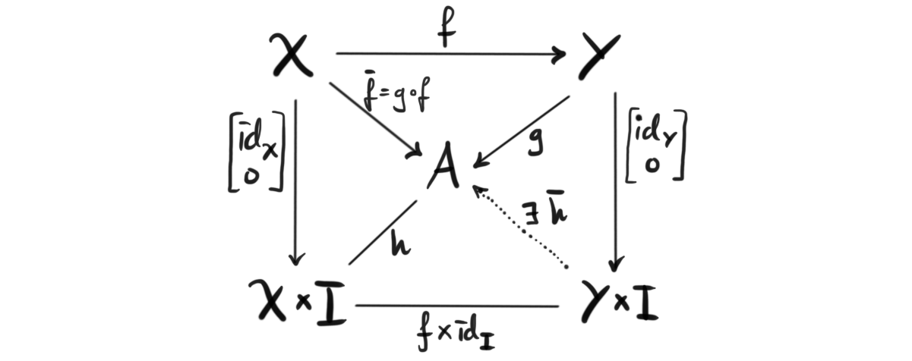
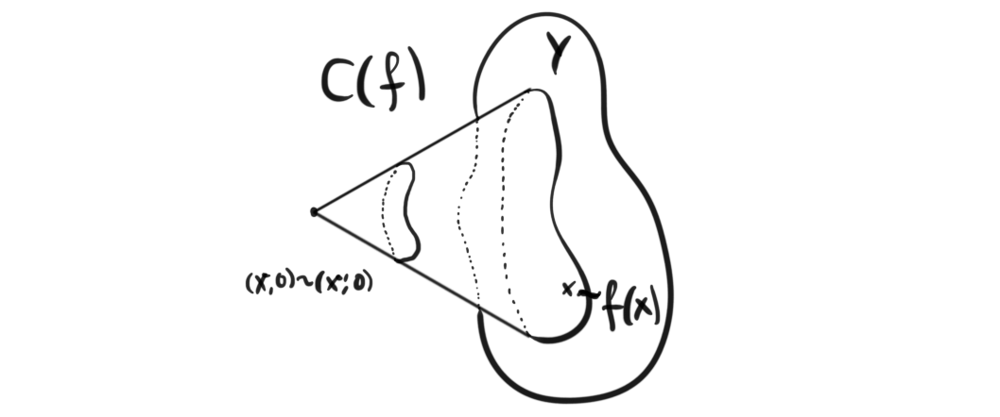
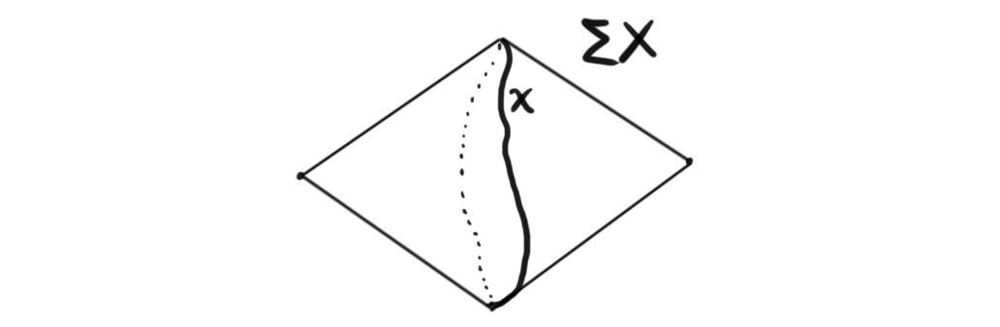

This is part 6 of a series leading up to and exploring model categories. For the other parts see 1, 2, 3, 4, 5 7, 8 and 9.
Through the series so far we have covered the basic uses of fibrations and related things, like the long exact sequence of homotopy groups, the Serre spectral sequence, fiber bundles and homotopy groups of spheres. But, we have not mentioned that fibrations has a dual construct, namely cofibrations. The road we are heading with this series, as mentioned before, is to define Model categories, and discover how to use them. Up until now, and including this post, I have been pretty comfortable with the objects of study, and I feel i know them quite well. After this post tho, I think I’m entering unknown territory for me, which is good!
Cofibrations
We first defined fibrations through the homotopy lifting property. So if cofibrations are dual to fibrations, there should be a dual notion to homotopy lifting. So, what is the dual to a lift? It is an extension. So, the cofibrations will be defined in terms of the homotopy extension property. Intuitively, we can think of this as “any homotopy defined on a subspace can be extended to the entire space”. This lacks some precision, but is a good intuitive start. Notice also here the use of subspaces. We remarked that fibrations kind of looked like projections, so the dual object should intuitively kind of look like an inclusion. Hence, instead of lifting a homotopy through a projection, we extend a homotopy through an inclusion. This is at least how I think about it. As said, this is not precise, and rigorous mathematics require precise definitions, so we need to give one.
Definition (cofibration): A map $f:X\rightarrow Y$ is called a Hurewicz cofibration if for any space $A$ and every map $g:Y\rightarrow A$ and homotopy $h: X\times I \rightarrow A$ such that $h(-,0)= g\circ f$, there exists a homotopy $\overline{h}:Y\times I\rightarrow A$ such that $\overline{h}\circ (f\times id_I) = h$. This is better summarized by the following diagram.

If the image of $X$ in $Y$ is a closed subspace, we call f a closed Hurewicz cofibration. From now on, if i say cofibration, i will mean closed Hurewicz cofibration.
Unfortunately, cofibrations don’t have as good of a geometric interpretation that their dual has (at least that i know of). The algebraic duality, and the duality in the definition is clear, but I often thrive of geometric interpretation, which I haven’t yet succeeded in with cofibrations. But, we can ask some of the same questions to try to dually mimic the behavior of fibrations, and the first step is the long exact sequence. We have already seen that extensions are the dual to loop spaces, so if we try to develop a sequence similar to the Puppe sequence we developed in part 3, then we should expect to instead continue towards the right and use iterated suspensions.
The coexact Puppe sequence
In the case of fibrations we did this by introducing the homotopy fiber, and this time we do the same by introducing the homotopy cofiber. Given a map $f: X\rightarrow Y$, the homotopy cofiber is often better known as the mapping cone of $f$. The mapping cone $C(f)$ can be thought of as the homotopy version of a quotient space, but more precisely it is defined to be the gluing of $X\times I$ to $Y$ along the image of $X$ under $f$ modulo the relation $(x,0)\sim (x',0)$. This is written mathematically as $C(f)= ((X\times I)\coprod_f Y) /(x,0)\sim (x',0)$. Here $(X\times I)\coprod_f Y$ means $((X\times I)\coprod Y)/(x,1)\sim f(x)$, i.e. gluing $X$ to its image in $Y$. The whole construction is maybe more visually understandable with the following picture.

One important thing for us is that the mapping cone of a closed cofibration is homotopy equivalent to the quotient space $Y/f(X)$. Now, the sequence $X\rightarrow Y\rightarrow C(f)$ is a cofiber sequence, or also called a coexact sequence. This is a feature of a sequence that we have not encountered yet. We have a nice notion of when a sequence $A\rightarrow B\rightarrow C$ is exact, which is when the kernel of the second map is equal to the image of the first map. A natural question that arises is when does such an exact sequence induce an exact sequence of homotopy classes of maps. If the induced sequence $[-, A]\rightarrow [-, B] \rightarrow [-, C]$ is exact, we call the sequence a fiber sequence. If the induced sequence $[A, -]\leftarrow [B, -] \leftarrow [C, -]$ is exact, we call it a cofiber sequence, or a coexact sequence. The sequence of functors being exact means it the resulting sequence after evaluating at an object is always exact, i.e. $[A, X]\leftarrow [B, X] \leftarrow [C, X]$ exact for all $X$.
Since the suspension is a functor we get from $X\rightarrow Y \rightarrow C(f)$ sequence $\Sigma X \rightarrow \Sigma Y \rightarrow C(\Sigma f)$, which turns out is also coexact. We can see this by passing to Hom functors and applying the isomorphism to the adjoint, which is the loop functor. In the picture above, we can see that $Y$ sits nicely inside the mapping cone as a copy. Hence we can include $Y$ into it to joint the two sequences. This inclusion is a cofibration, and hence its mapping cone is homotopy equivalent to the quotient $C(f)/Y$, which is the same as the suspension of $X$. Recall from earlier that the suspension is defined as $\Sigma X = (X\times I)/(x,0)\sim (x',0), (x,1)\sim (x',1)$. A picture might help.

We then have the coexact sequence $X\rightarrow Y \rightarrow C(f) \rightarrow \Sigma X \rightarrow \Sigma Y \rightarrow \Sigma C(f)$. Iterating this construction, we get a long coexact sequence called the coexact Puppe sequence, or the topological cofiber sequence. There are a few details that I fave glossed over, and there maybe some cases that we should be careful about, but at least for CW complexes this should hold.
Ok, we know this is a coexact sequence, which means that if we apply a contravariant Hom functor on it, we will have a long exact sequence. What object should we use? In the case for the regular Puppe sequence, we used the homotopy Hom functor $[S^0, -]$, so what is the dual to this functor? It is $[-, K(\mathbb{Z},k)]$. I think the reason this is true will become clear in a little bit, but to give a short note, recall that we used the adjointness between loop spaces and suspensions, and using $S^0$ was a good choice because the suspension of spheres is again a sphere in one dimension higher. So now, we also want to use this adjointness, but then we have iterated loop functors, and what spaces do we know that when used the loop functor on is again the same kind of space, but one dimension lower? You guessed it, its the Eilenberg-MacLane spaces we developed in part 5! Recall that we used that $\Omega K(\mathbb{Z},k) \cong K(\mathbb{Z}, k-1)$. Ok, so we then get the long exact sequence
$$\leftarrow [\Sigma^n X, K(\mathbb{Z}, k)] \leftarrow [\Sigma^n Y, K(\mathbb{Z}, k)] \leftarrow [\Sigma^n C(f), K(\mathbb{Z}, k)] \leftarrow [\Sigma^{n+1} X, K(\mathbb{Z}, k)] \leftarrow ,$$
and since loops and suspensions is adjoint, we get
$$\leftarrow [X, \Omega^n K(\mathbb{Z}, k)] \leftarrow [Y, \Omega^n K(\mathbb{Z}, k)] \leftarrow [C(f), \Omega^n K(\mathbb{Z}, k)] \leftarrow [X, \Omega^{n+1} K(\mathbb{Z}, k)] \leftarrow ,$$
which we know, as noted above, is the long exact sequence
$$\leftarrow [X, K(\mathbb{Z}, k-n)] \leftarrow [Y, K(\mathbb{Z}, k-n)] \leftarrow [C(f), K(\mathbb{Z}, k-n)] \leftarrow [X, K(\mathbb{Z}, k-(n+1)] \leftarrow .$$
Ok, now what? How does this help us at all? We are maybe expecting to find some dual notion of homotopy here, and in a way, that is what we get. There is a construction called cohomotopy (which we may explore in a later post), but this is not the construction we have here. What we have created is actually the long exact sequence in cohomology!
Cohomology
The first time i learned this, I was surprised. How do we see this? Recall that a $K(\mathbb{Z}, n)$ space in $(n-1)$-connected. Hence, by the Hurewicz theorem discussed in part 5, we have
$$H_n(K(\mathbb{Z}, n)) \cong \pi_n(K(\mathbb{Z}, n))\cong \mathbb{Z},$$
and
$$Ext(H_{n-1}(K(\mathbb{Z}, n)), \mathbb{Z}) \cong Ext(0, \mathbb{Z}) \cong 0,$$
so by the cohomological universal coefficient theorem (cUCT) we have
$$H^n(K(\mathbb{Z}, n)) \cong Hom(H_n(K(\mathbb{Z}, n)), \mathbb{Z}) \cong Hom(\mathbb{Z}, \mathbb{Z}) \cong \mathbb{Z}.$$
This means that there is a canonical class in $H^n(K(\mathbb{Z}, n))$ corresponding to the identity element $1\in \mathbb{Z}$, call this $\iota$. Hence we have a natural map $[X, K(\mathbb{Z}, n)] \rightarrow H^n(X;\mathbb{Z})$ given by evaluating the induced map in cohomology from a homotopy class of maps in $[X, K(\mathbb{Z}, n)]$ on the canonical class, i.e. $[ f ]\mapsto f_*(\iota)$. This map is in fact an isomorphism of Abelian groups. We can see this by first confirming for spheres, and then for a bouquet of spheres, and use the skeleton structure of $X$ as a CW-complex, which gives the cofibration $X^{k-1}\rightarrow X^k \rightarrow \bigvee S^k$ to get the result through induction on the degree of the skeleton, and lastly union over them all to get the result for $X$. Finally we are left with $[X, K(\mathbb{Z}, n)] \cong H^n(X;\mathbb{Z})$, for all CW complexes $X$. If we assume the map f to be a cofibration, then the cohomology of the mapping cone is the same as the relative cohomology $H^n(Y,X)$. Finally, from the sequence
$$\leftarrow [X, K(\mathbb{Z}, n)] \leftarrow [Y, K(\mathbb{Z}, n)] \leftarrow [C(f), K(\mathbb{Z}, n)] \leftarrow [X, K(\mathbb{Z}, n-1)] \leftarrow ,$$
we have, under the isomorphisms discussed above, the long exact sequence
$$\leftarrow H^n(X;\mathbb{Z}) \leftarrow H^n(Y;\mathbb{Z}) \leftarrow H^n(Y,X;\mathbb{Z}) \leftarrow H^{n-1}(X;\mathbb{Z}) \leftarrow .$$
This is not the standard, and should not be the standard way to produce this exact sequence, but I still find it cool that it works this way. Cohomology doesn’t feel dual to homotopy, but in a way, this construction shows that they are, at least for some notion of dual. Maybe thinking of them as adjoint constructions is better, I don’t know. This was all I wanted to do for this post. There is another way to characterize cofibrations, namely through neighbourhood deformation retracts. The only reason i mention this is to have a relevant artwork by Fomenko to end the article with, so here is “A retraction of a space onto a subspace of it“.